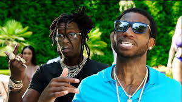
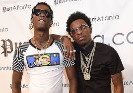

Jeffery Lamar Williams (born August 16, 1991), known as Young Thug, is an American rapper, singer, and songwriter. He is known for his eccentric vocal style and fashion. He first received attention for his collaborations with rappers Rich Homie Quan, Birdman, and Gucci Mane. Young Thug initially released a series of independent mixtapes beginning in 2011 with I Came from Nothing. In early 2013, he signed with Gucci Mane's 1017 Records, and later that year he released his label debut mixtape 1017 Thug to critical praise. If you would like to read more about Young Thug then you can here.

Pictured here is Young Thug with fellow rappers Gucci Mane and Rich Homie Quan
 